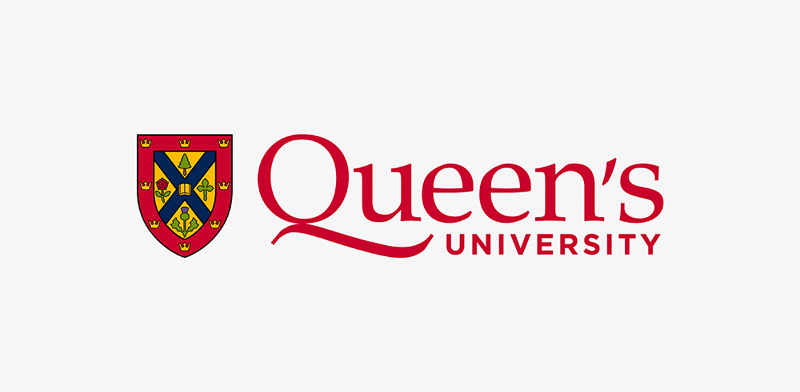

Northview Heights Secondary School
NHSS Senior Guides is a student-created support resource for any students at NHSS to help prepare for university after high school.
Step 1 — University Applications
The Ontario Universities' Application Centre is how you apply to every Ontario university. Here's everything you need to know.
OUAC is the centralized platform for submitting university applications across Ontario. Your guidance office automatically sends your grades — you do not submit transcripts, subapps, or extracurriculars through OUAC.
| Programs | Cost |
|---|---|
| First 3 programs (minimum) | ~$150 |
| Each additional program | +$50 each |
| Programs with supplementary apps (e.g. Rotman Commerce) | +$50 extra |
Step 2 — After You Apply
After applying through OUAC, each university will email you a student/applicant number. Use it to access their portal — but wait for that email first.
Portal: JOIN U of T — used to track your application, upload documents, and receive decisions.
Portal: MyFile — your hub for tracking status, uploading documents, and supplementary apps.
Portal: ChooseTMU — note that activation can take up to 24 hours.
Portal: Mosaic — requires a MacID activation first.
Portal: Undergraduate Applicant Portal — check it frequently, updates and tasks appear here first.

Portal: SOLUS (MyQueen'sU) — accessed after activating your NetID.
Portal: Student Center — set up your Western Identity first.
Grade 12 Courses
Real ratings and advice from NHSS seniors. Your experience may vary depending on your teacher and strengths.
For each course, we chose a difficulty rating from 0–5, 5 being the hardest.
⚠️ All info is based on the 2026 curriculum from our personal experience. Material or difficulty may change over time.
Extremely time-consuming with subjective marking. Getting above 90 is very doable — 95+ in-person is almost unheard of. Favoritism is real.
Builds on Grade 11 Functions. Most students find it easier than Functions. Teacher-dependent — effort matters more than raw ability.
Requires Advanced Functions. Many consider this the hardest math, but it's very doable with strong work ethic. Do problems until you feel confident before every test.
Easiest of the three math options. Highly recommended if your program requires any math. With decent effort, 90+ is very achievable.
Nothing like Grade 11 Chem — much harder. Requires conceptual understanding, not just memorization. Lots of application. Cheat sheets allowed for labs and some units.
Reviewed by Nicole Yanovsky, UofT Chemical Engineering Student
Lots of memorization and detail. Far more specific than Grade 11. You can lose marks quickly if you miss any keywords — be methodical and thorough in answers.
Reviewed by Sophie Low, McMaster Health Science Student
Completely different from Grade 11 Physics. Requires significant time and deep understanding. Only take it if your university program requires it.
Reviewed by Avin Karimi, Waterloo Mechanical Engineering Student
Reuses ICS3U concepts but in Java instead of Python. If you did well in Grade 11, expect similar results here.
Reviewed by Kennedy Tran, UofT Computer Science Student
Builds directly on Grade 11 computer engineering concepts. Straightforward if you did well in Grade 11.
Reviewed by Kennedy Tran, UofT Computer Science Student
Real robotics challenges with real deadlines. Enjoyable but would benefit from more structure.
Reviewed by Timothy Lin, UWaterloo Mechanical Engineering Student
Know Before You Apply
Two essential tools every Grade 12 student should know about before locking in their university choices.
Talk to universities face-to-face — for free
Every Ontario university in one massive room. Walk up and ask real questions to university reps and students about programs, campus life, averages, costs, and more.
Ontario's official university program database
OUInfo (formerly eINFO) is the official online guide to all Ontario universities, managed by OUAC. It's the most reliable database for finding program info, requirements, and costs — way more trustworthy than random Reddit threads.
Free Money
Apply early — most scholarship portals close well before university deadlines.
External Scholarships
Entrance Scholarships
Automatically awarded when admitted to a university based on your average. No application needed for most — just keep your grades up.
We're always updating this guide. DM us on Instagram and we'll add them — or ask us anything about scholarships.
@nhss.seniorguidesStudy Tools & Links
The best free tools used by NHSS students to survive Grade 12.